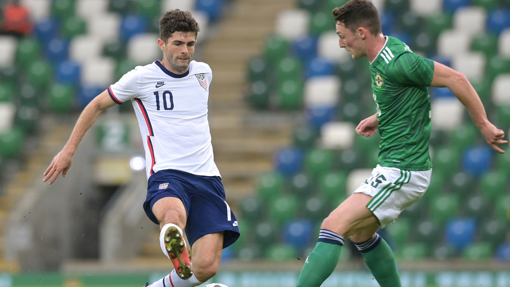

Final Scores: USA 4-1 Jamaica; USA 2-1 Northern Ireland
This week, the US Men’s National Team got back on the field for the first time since a 7-0 thrashing of Trinidad and Tobago in January. This time, the European-based players were involved, and for the first time in a long time we got to see what the squad will look like as they move into a year of competitive matches (Gold Cup this summer, World Cup Qualifying this fall). Here are five key takeaways from the week:
1. Sloppy, Sluggish, But Getting The Job Done
If there was a single main takeaway from this entire international break it is that every player is currently exhausted, US or otherwise. That fact was clearly evident in their play, as the off ball movement was limited, pressing was non-existent, and the passing was slow and safe. Every player on the field has either just come out of a multi-game-per-week three month stretch or has barely begun their preseason. Nobody was in shape so it was hard at times to judge the games as anything more than a tune-up and to get a better feel for the personnel Berhalter will be working with going forward. Still, the US was able to get the job done in both games. They controlled the pace and the ball, being patient and taking their chances to score when they came. If not for two sloppy mistakes from the defense — and two ridiculously good finishes — the US would have kept clean sheets in both games as well. If they can clean up the sloppiness by this summer, they should be able to roll through the Gold Cup.
2. Pulisic Is Back And Shows He’s Still The Key
Christian Pulisic is finally back! The Chelsea forward made his first appearances for the national team since October of 2019, and he did not disappoint. Against Jamaica, Pulisic played just the first half, and looked a little rusty as he is still getting back to full fitness after a recent injury and a lack of game time. But he still showed flashes of brilliance, which carried over to the match against Northern Ireland. Pulisic had a man of the match performance in the 2nd game, going the full 90, dropping deep and driving play forward with his dribbling, showing off his creative passing with some excellent through balls, and drawing and scoring the penalty that ended up being the winning goal. It was a complete performance from Pulisic, and it showed how important he still is to this team. Hopefully he can keep healthy through qualifying, because Christian Pulisic is the key to making this team work.

3. Striker Spot Still A Mystery
As World Cup Qualifying rapidly approaches, the question of who would solidify themselves as the starting striker is on a lot of people’s minds (especially given the up-and-down club form of a lot of them). Unfortunately, these friendlies didn’t exactly do much to answer those questions. Josh Sargent and Jordan Siebatcheu looked fine starting in either game, but neither was able to stand out from the rest of the bunch. Daryl Dike looked the most threatening of the strikers when he came on against Northern Ireland (unsurprising given how well he has been doing for Barnsley), but even then he showed some issues with his finishing. Given what we have seen of everyone so far, I’d say the spot is Dike’s at the moment, but I could easily see Berhalter chopping and changing until someone really makes a leap in their development.
4. Quality Depth Provides Versatility
These friendlies really did seem like an opportunity for Berhalter to tinker with the wide variety of personnel at his disposal. And tinker he did. We saw two different formations in each game (a 4-3-3 and a 3-4-3) each shifting based on whether or not Dest and Robinson were playing. Brenden Aaronson showed a lot of promise of the bench as another option behind Pulisic and Gio Reyna. Chris Richards also looked comfortable as the left-sided centerback in the back-three (the role he plays for Hoffenheim). The quality of the US bench is very promising, but what makes it even more exciting is how versatile and adaptable a lot of this personnel is. A lot of players can perform well in multiple positions and in multiple roles. On top of that, they are all incredibly young and will only get better from here. It’s an exciting time to be a fan of US Soccer.
5. Midfield Depth Is A Little Worrying Though
The one part of the team going forward that we didn’t get a good look at in these last two games was the midfield. We did get a good look at depth pieces in Kellyn Acosta, Sebastian Lletget, and a potential starter in Yunus Musah, but we all know that this won’t be the midfield this summer. Tyler Adams (held out of the squad by his club due to COVID restrictions) and Weston McKennie (held out due to injury) will be right back in the starting eleven when healthy. They have been and will continue to be key pieces to this team for years to come. Based on what’s behind them though, we may need to worry a bit about what happens if/when either of them is unavailable again. For all the talented depth at centerback and in the attacking midfield roles, the deeper midfield positions are lacking. Acosta and Lletget looked fine in the friendlies, but they don’t have the technical abilities to really dominate competitive matches, at least relative to Adams and McKennie. It works for now, but the backups will need to show a bit more in the event of another injury to either of the starters.